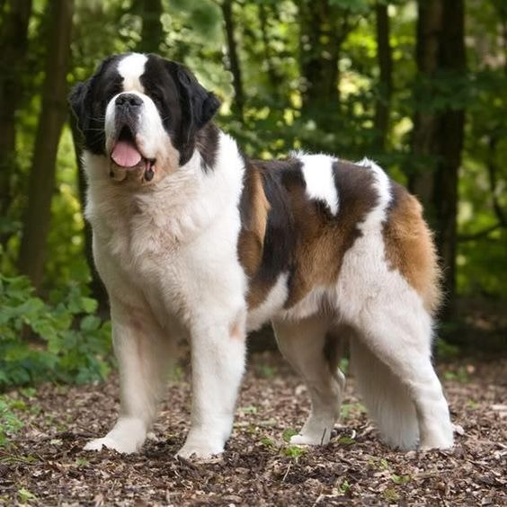

Conoce a nuestras mascotas
Tenemos diversos compañeros que podrán acompañarte, protegerte y cuidarte...

Los golden retrievers son perros populares como mascotas debido a su naturaleza amigable, inteligente y fácil de entrenar
Pastor alemán: Conocido por su valentía, inteligencia y capacidad de aprendizaje, lo que facilita su entrenamiento como perro guardián.
Doberman: Atlético, ágil y con un ladrido intimidante, el Doberman es una excelente opción para la protección del hogar.
Rottweiler: Una raza poderosa con un fuerte instinto protector, a menudo asociada con la protección de ganado y propiedades.
Bullmastiff: Fuerte, corajudo y leal, el Bullmastiff es un guardián implacable con un instinto protector innato.
Gran Danés: Aunque cariñoso con su familia, su gran tamaño y fuerza intimidan a los extraños, lo que lo convierte en un excelente perro guardián.
Boxer: Un perro juguetón y enérgico con un fuerte instinto protector, que puede adaptarse a diferentes tamaños de hogar.
Boyero de Berna: Aunque no es tan comúnmente asociado con la guardia, esta raza tiene un instinto protector desde sus orígenes como perro de protección.

San Bernardo: Conocido por su tamaño y naturaleza gentil, el San Bernardo también posee un fuerte instinto protector y es leal a su familia.
Maine Coon: Conocido por su gran tamaño y carácter dócil, es ideal para familias.
Ragdoll: Relajado y cariñoso, se lleva bien con otros animales y niños.

Siamés: Social y vocal, disfruta de la interacción humana y la compañía.